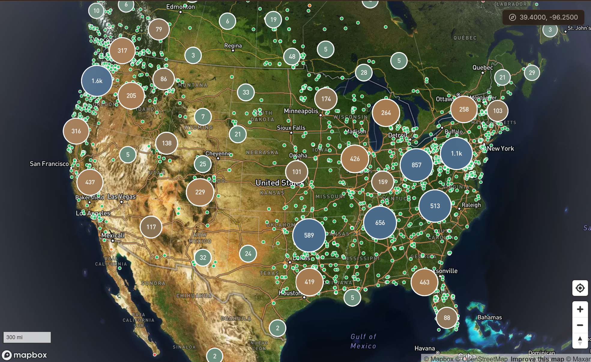

Favorite Maps
Some of my favorite online maps!

Lake Powell Critical Levels
This awarding winning map by Zach Beck at the Utah Geospatial Resource Center shows just how close we came in April 2026 to the mInimum water level required to create power from Glen Canyon Dam.

The Big Foot Map
See where big foot sightings have occurred on this interactive web map! Click on a dot to read about the reported sighting or submit your own.